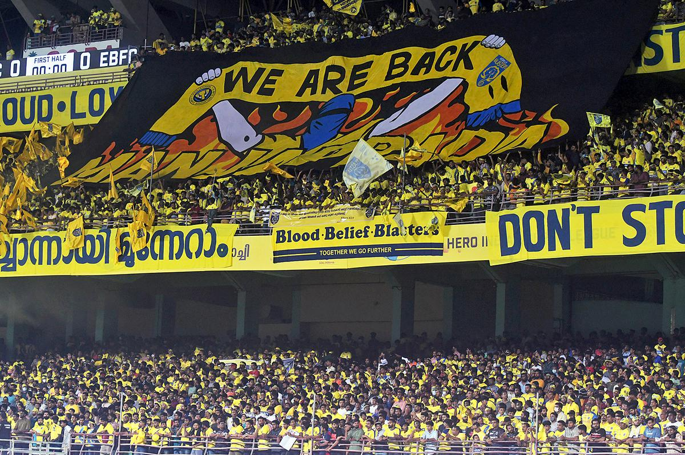

The insane Fane Base
Unlike other ISL clubs, Kerala Blasters is a state franchise club which represents every people of Kerala. So many North Keralites (Famous for football passion) and South Keralites came to JLN Stadium, Kochi. It is a passion which unites every people of Kerala. In addition, Kerala is one of state in India where Futbol is popular than Cricket. It is because of the Portuguese Colonisation and the portuguese settlers in Cochim (Kochi), Cananor (Kannur) and Calecute (Kozhikode) often conduct matches with the local people. This passion passed to every corner of Kerala and now, became a footballing state. But sadly, KBFC management misuses the fans for business, so today, Most of the Keralites are not supporting KBFC as before they were. However, you can find few footballers in Kerala as compared to Kolkata because Football here considered as it spoils our education. So most of the people who have hidden talent in football were forced to concentrate on studies by their parents, and is one of the reason, why Kerala is literate.
